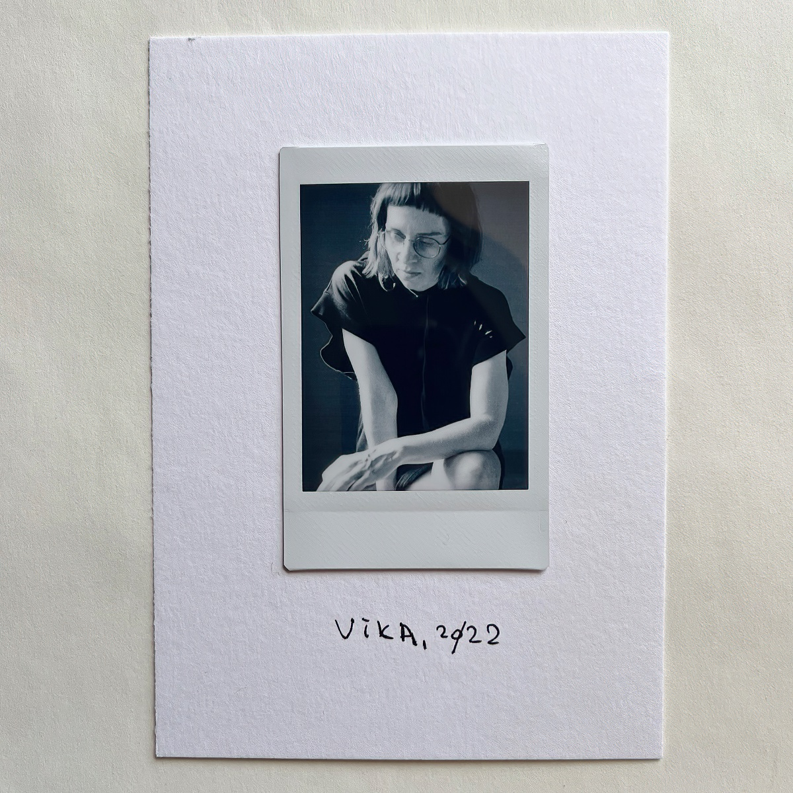
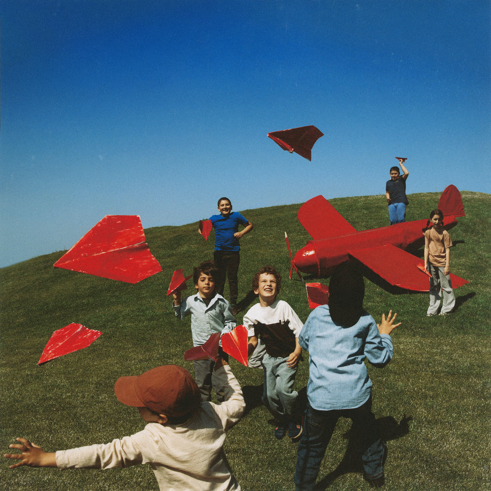
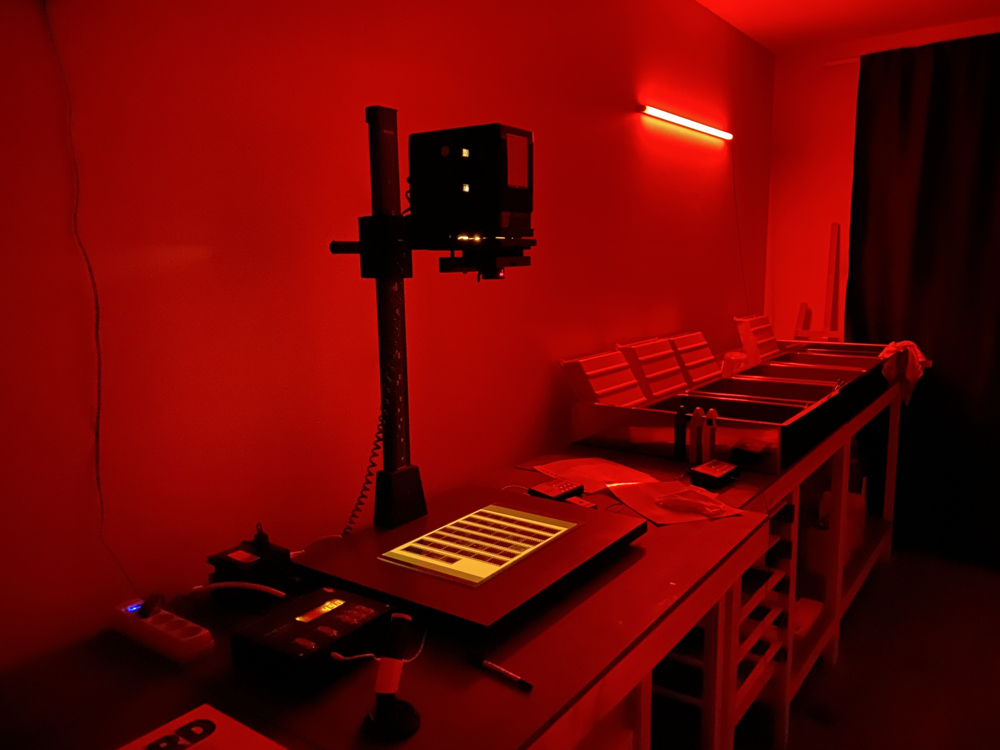
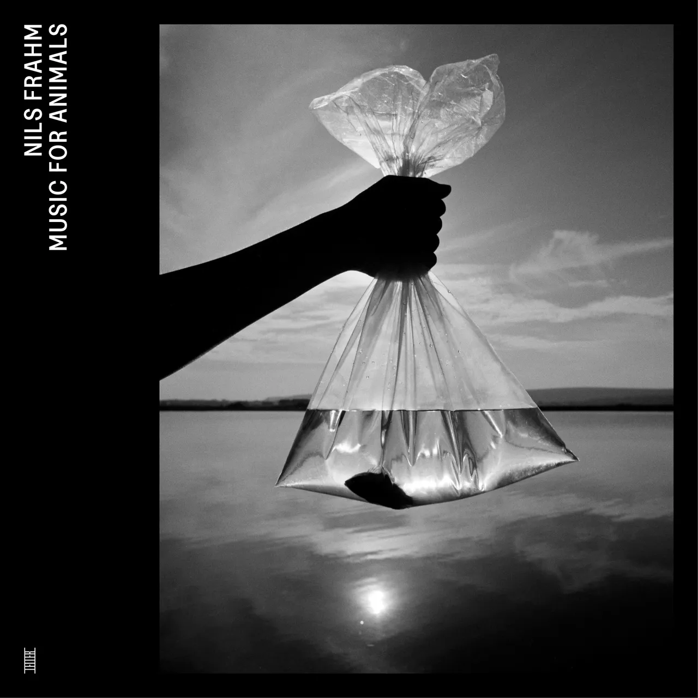
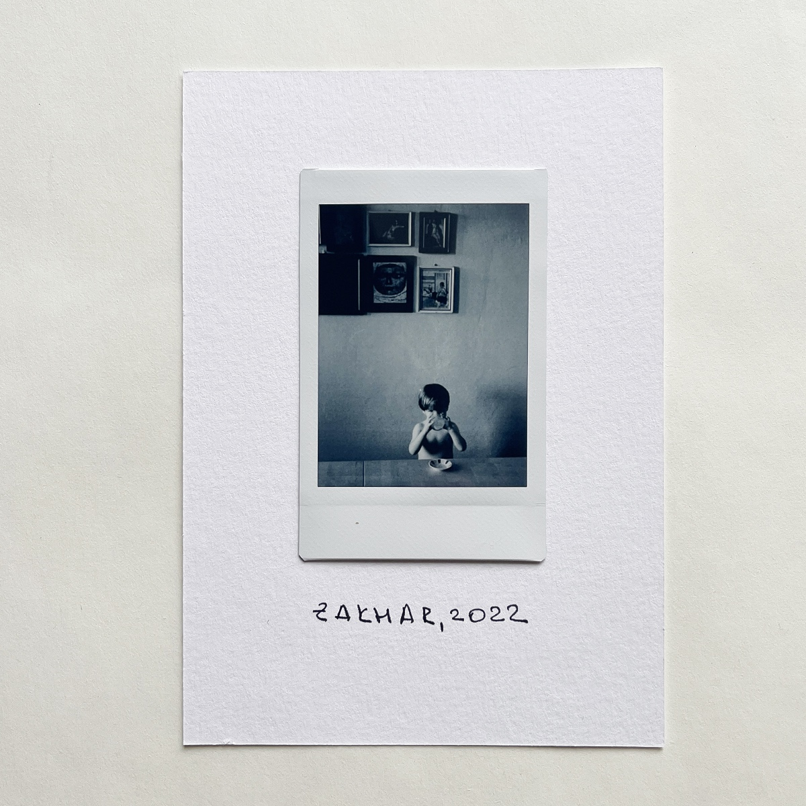
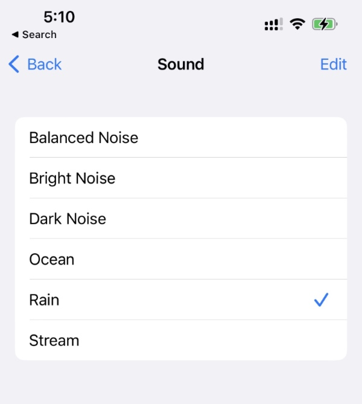

Ох, какое классное кино!
Вика, 2022

Mgzavrebi - Kamara (2023)

Как же я соскучился по чувакам! И как же хочется снова услышать их вживую!
Даркрум
А вот такой даркрум я забахал в Питере:

Nils Frahm - Music For Animals (2022)

Кайфовый альбом!
Захар, 2022

Фоновый шум
Оказалось, что уже несколько версий iOS умеет генерить разный фоновый шум:

Спрятано это все в Settings → Accessibility → Audio/Visual → Background Sounds.
Я по этому поводу запилил шорткат, который умеет включать этот шум на указанное время (про "шорткаты" или "команды" можно прочитать тут).
Включаю его перед сном или когда хочу чтобы ничего не отвлекало.
Заодно выяснилось, что шорткаты в iOS не идеальны)
Голод
Обращение за помощью было отправлено всем, и многие люди из этой страны, и других стран, ответили на зов о помощи и были очень щедры. Но многие другие хотели узнать, кто виноват — засуха или политическая система? Чем же эти вопросы могут смягчить ужасные страдания? Какой смысл они имеют для тех, кто умирает от голода?
Все политики мира, за исключением Соединенных Штатов, пытались найти предлог, для того, чтобы ничего не предпринимать и обвиняли во всем самих русских.
Говорю вам: в мире что-то сгнило, но еще есть возможность это исправить. — Фритьоф Нансен
Отец, 2020

Отцу сегодня 85.
Захар, 2022

Пока мы жили в Невшехире, я снял несколько своих автопортретов, а Захар, увидев это, решил снять себя. Только самостоятельно сжать грушу у него не получилось, так что пришлось помочь.